Why we started Millennials4Boards — and what we are building next.
The boards facing climate, cyber, AI governance, workforce composition and shifting capital flows are the most experienced and the least generationally diverse they have ever been. The gap isn't ambition. It's who's around the table.
Three forces reshaping what boards now have to answer.
Three-quarters of the global workforce is millennial or Gen Z. Boards deciding workforce strategy without that perspective are guessing.
Cyber, AI, climate, stakeholder capitalism — the questions are new and the room was assembled for the old ones.
Digitally fluent, internationally mobile, mentored by those already in the seat. The network exists to find and form them.
Community · Mentorship · Access.
A global peer network of current and emerging directors, convened in-person and online around governance's hardest questions.

1:1 pairings between sitting directors and aspiring ones. Structured. Measured. Built for outcomes, not coffee chats.

A shortlist of open board roles our corporate partners are quietly looking to fill — and the member directory they search.
Five milestones · Zurich-based · global.
In Zurich, among peers navigating their first board seats.
14 founders, 30 members, 6 mentors.
Expansion across DACH, UK and Southern Europe.
HeadsQuarters, WBN, Female Leaders Network.
Three cohorts a year. Corporate partners growing.
Millennials4Boards was born from a conversation among peers — professionals across generations who saw the complexity of modern board responsibilities and the power of learning from one another.
Today's boards are answering questions they weren't assembled to answer. The future is collective — and we're building the network that makes that collaboration real.
Join as a member, mentor a cohort, or partner as a company.